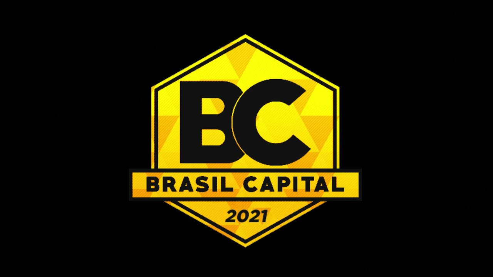
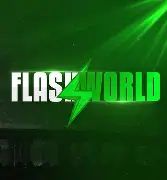

Um dos servidores de GTA RP mais tradicionais e com alta quantidade de jogadores simultâneos no Brasil — já registrando picos de centenas de players ao mesmo tempo online, com uma comunidade grande e ativa em São Paulo.

Esse tipo de servidor aparece frequentemente com alto número de jogadores brasileiros nos rankings de servidores (por exemplo em sites de listagem como PlayFivem), muitas vezes perto dos primeiros lugares em populações ativas em servidores brasileiros.

Também listado em rankings brasileiros de servidores com centenas de jogadores conectados ao mesmo tempo, esse estilo de cidade RP atrai bastante comunidade brasileira pela diversidade de atividades e scripts.